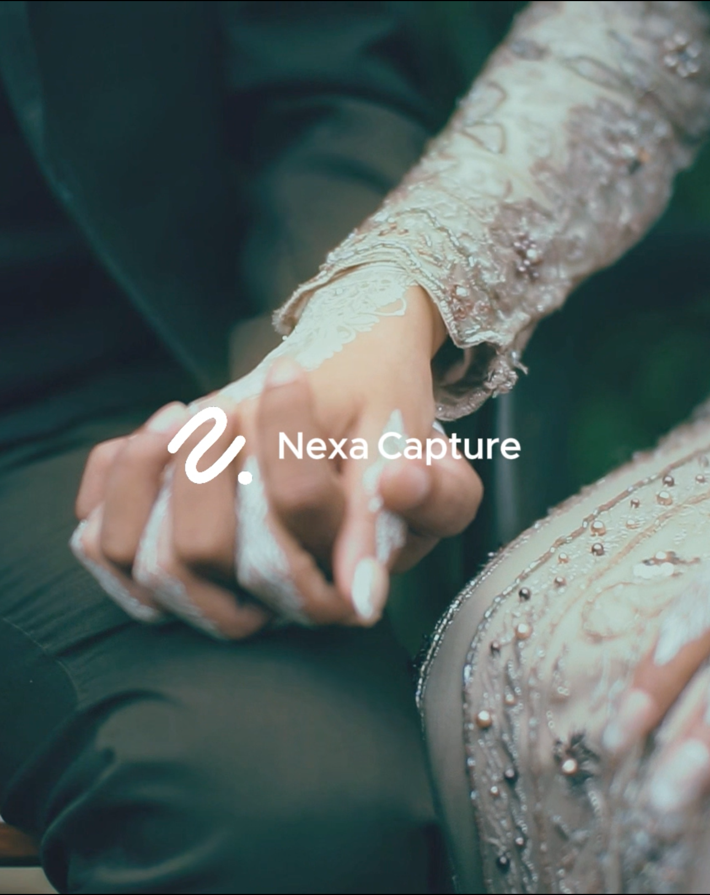
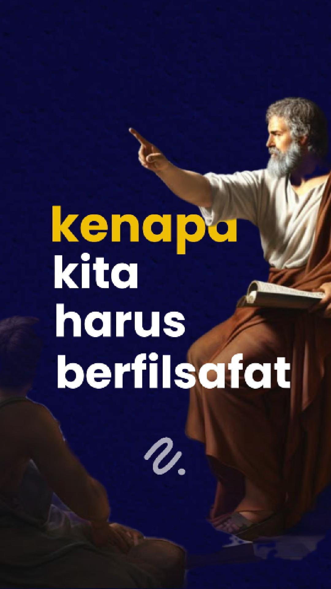
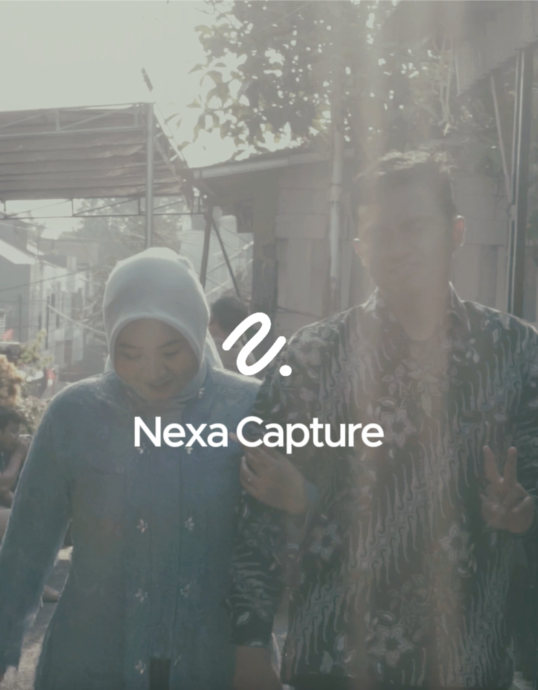

Hi, Saya Rehan.
VideographerdanEditor Video
Saya berfokus pada pembuatan video yang menarik dan sinematik, dari dokumentasi acara hingga video promosi.
Lihat PortofolioSaya berfokus pada pembuatan video yang menarik dan sinematik, dari dokumentasi acara hingga video promosi.
Lihat Portofolio
Saya adalah seorang videographer dan editor video yang berdedikasi untuk menghadirkan cerita visual yang kuat dan berkesan. Dengan pengalaman lebih dari beberapa tahun, saya menggabungkan kreativitas dan teknik sinematik untuk menghasilkan video yang tidak hanya menarik secara visual, tetapi juga mampu menyampaikan pesan dengan tepat. Setiap proyek bagi saya adalah kesempatan untuk menciptakan karya unik yang mampu menginspirasi dan memukau audiens.

Clipper - Bagus Muljadi dan Papa Franky

Engagement Farhan dan lili
Wedding untung dan lulu
Saya seorang videographer dan editor video dengan lebih dari [X] tahun pengalaman. Keahlian saya meliputi pengambilan gambar sinematik, pengeditan video kreatif, dan pembuatan cerita visual yang efektif.